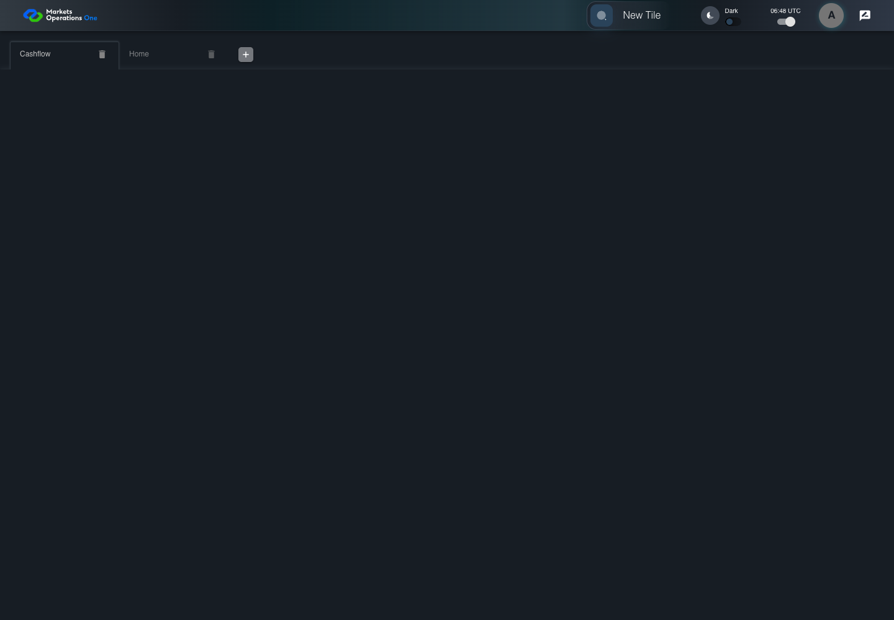
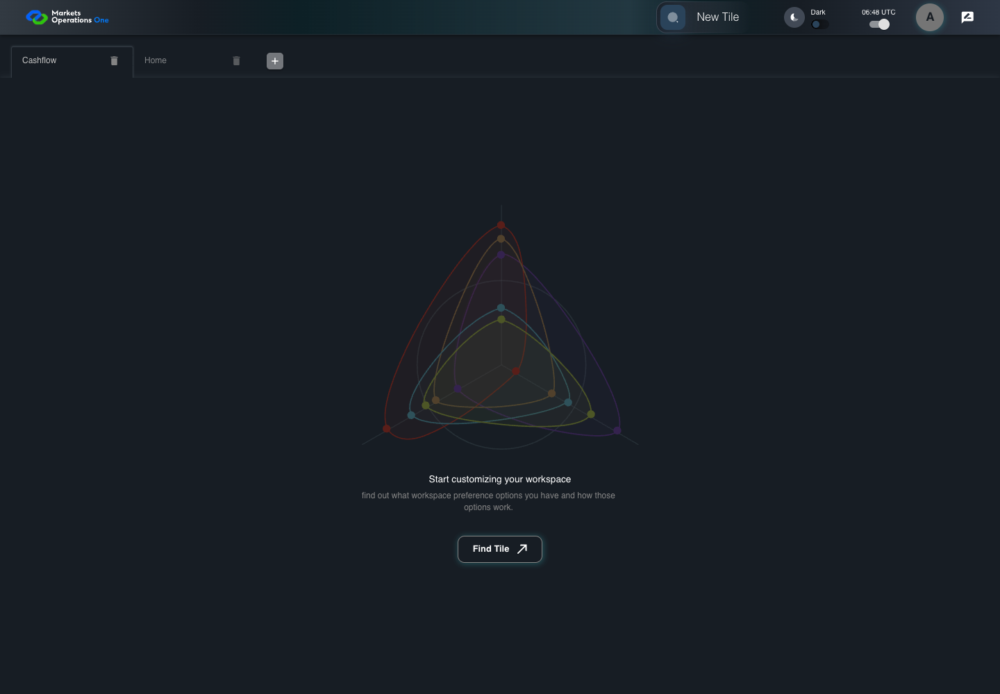

UX-004 keyboard and accessibility probe
PASS · application/run-077/ux-004-keyboard-and-accessibility-probe-5097a2dd67b6-attempt-1 · ACTUAL_APPLICATION_LOCAL_SERVICES
Actual React shell. Controlled catalog, user identity, photo failures, and SystemJS tenant. Chromium only. Accessibility and layout outcomes are proposed probes; no approved conformance standard is inferred.
2026-10-22T06:47:58.973Z to 2026-10-22T06:48:03.440Z
Assertions and result · Artifact manifest · Exact run inputs and source hashes
Result SHA-256:5993cebcfa61a19f3ce05e13bec1eb538606abaa40200077eb78e6d53de58936Machine observations
- keyboard-workspace-fixture.json
55215e4b37966d28f99549d3361e44e16098fe68b359bb7c70040cf3f118e6e2
Screenshot capture: CAPTURED. Named frames: 6.
Step screenshot evidence: COMPLETE. 5/5 canonical steps have execution screenshots.
Canonical step timeline
Given USER-A has the tab labelled "Home" in the tablist named "workspaces" on the Home page focused and Cashflow workspace loaded
Execution: PASSED.
1. step-01 Visible state after step 1: Given USER-A has the tab labelled "Home" in the tablist named "workspaces" on the Home page focused and Cashflow workspace loaded
2026-10-22T06:48:01.888Z · 1440×1000
Step: /Users/lushevol/code/github/ratan-release-impact/workbench/tasks/ui-test-coverage-20261022/test-cases.md:12417
SHA-256:35f35b17ef7356c19b11ecec593e02c15619e84a038c925bbede8057200259f5When USER-A presses "ArrowRight" on the tab labelled "Home" in the tablist named "workspaces" on the Home page
Execution: PASSED.2. step-02 Visible state after step 2: When USER-A presses "ArrowRight" on the tab labelled "Home" in the tablist named "workspaces" on the Home page
2026-10-22T06:48:01.985Z · 1440×1000
Step: /Users/lushevol/code/github/ratan-release-impact/workbench/tasks/ui-test-coverage-20261022/test-cases.md:12418
SHA-256:a0df0d10087c21cb31709c6fb9b13ec3c1ff676c870d276dbb1aed84a60f0bf4And USER-A presses "Enter" on the tab labelled "Cashflow" in the tablist named "workspaces" on the Home page
Execution: PASSED.3. step-03 Visible state after step 3: And USER-A presses "Enter" on the tab labelled "Cashflow" in the tablist named "workspaces" on the Home page
2026-10-22T06:48:02.134Z · 1440×1000
Step: /Users/lushevol/code/github/ratan-release-impact/workbench/tasks/ui-test-coverage-20261022/test-cases.md:12419
SHA-256:a372a00ee2a29cb2930a4f950e70c0a750964521a1f88cf5ddd1389d4bbccd01Then The tab labelled "Cashflow" in the tablist named "workspaces" on the Home page has selected state equal to true
Execution: PASSED.4. step-04 Visible state after step 4: Then The tab labelled "Cashflow" in the tablist named "workspaces" on the Home page has selected state equal to true
2026-10-22T06:48:02.262Z · 1440×1000
Step: /Users/lushevol/code/github/ratan-release-impact/workbench/tasks/ui-test-coverage-20261022/test-cases.md:12420
SHA-256:ce077344f0e85cb41dff04c423a4bfe4836329a7d302661bd7cdb37fa85cecadAnd The tabpanel with identifier "workspaces-tabpanel-1" on the Home page is visible
Execution: PASSED.
5. step-05 Visible state after step 5: And The tabpanel with identifier "workspaces-tabpanel-1" on the Home page is visible
2026-10-22T06:48:02.417Z · 1440×1000
Step: /Users/lushevol/code/github/ratan-release-impact/workbench/tasks/ui-test-coverage-20261022/test-cases.md:12421
SHA-256:729207a2f4023b9c8280cda4456813b119455d4bd1531eb73270c57f68dea75d
Additional named frames
Screenshots establish visible state only. Assertions and traces support functional claims.